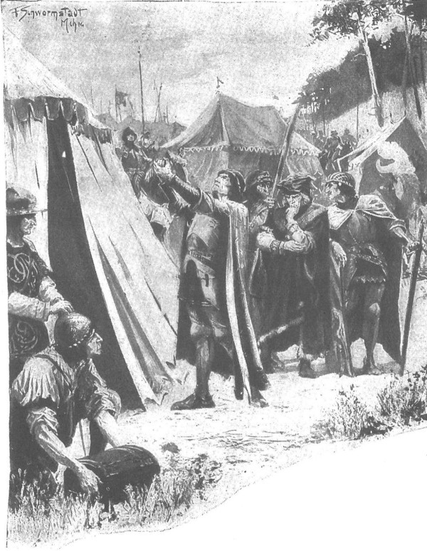
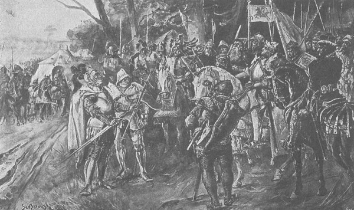
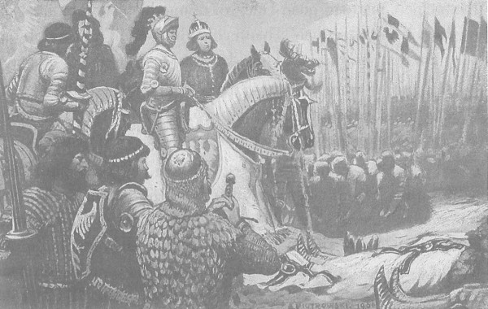
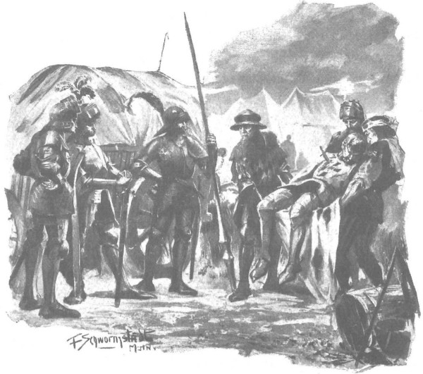

Linh mục Bartosz thành Klobuck đã hoàn tất một khóa lễ misa, và linh mục Jarosz xứ Kalisz sắp sửa bắt đầu khóa lễ thứ hai, đức vua vừa bước ra trước lều để duỗi cái đầu gối đã hơi mỏi, thì bỗng nhiên nhà quý tộc Hanko Ostojczyk đột ngột lao đến như một cơn bão, rồi nhảy vọt khỏi lưng con ngựa đẫm mồ hôi, ông kêu lên:
- Bọn Đức đang kéo đến, tâu đức vua nhân từ!
Nghe những lời ấy, các hiệp sĩ đứng phắt cả dậy, đức vua sa sầm nét mặt, im lặng một thoáng rồi thốt lên:
- Ngợi ca Chúa Giêsu Ki-tô! Ngươi thấy chúng ở đâu, có bao nhiêu chiến đoàn?
- Thần nhìn thấy một chiến đoàn gần Grunwald, - hiệp sĩ Hanko vừa thở hổn hển vừa nói, - nhưng nhiều đám bụi bốc lên phía sau đồi, hình như chúng có nhiều quân nữa đang kéo đến.
- Ngợi ca Chúa Giêsu Ki-tô! - Đức vua lặp lại.
Khi đó đại quận công Witold - người mà chỉ sau lời nói đầu tiên của Hanko, máu đã dồn lên mặt và đôi mắt bắt đầu cháy rực lên như hòn than - quay sang các cận thần và thét lên:
- Hủy lễ misa thứ hai, đưa ngay ngựa cho ta!
Đức vua đặt tay lên vai Witold và bảo:
- Đi đi, người anh em, còn ta sẽ ở lại tham dự lễ misa thứ hai.
Thế là đại quận công Witold và hiệp sĩ Zyndram xứ Maszkowice nhảy ngay lên ngựa, nhưng vừa đúng lúc họ định quay lại trại, một thám mã thứ hai là nhà quý tộc Piotr Oksza xứ Wlostów phóng ngựa đến, và ngay từ xa đã hét lớn:
- Bọn Đức! Bọn Đức! Tôi thấy hai chiến đoàn!
- Lên ngựa! - Nhiều tiếng nói vang lên trong đám cận thần và các hiệp sĩ.
Nhưng ông Piotr chưa dứt lời, thì tiếng vó ngựa lại vang lên và thám mã thứ ba lao đến, tiếp theo là người thứ tư, thứ năm và thứ sáu: mọi người đều thấy số lượng các chiến đoàn của Đức đang tăng lên. Không nghi ngờ gì nữa, toàn bộ quân đội Thánh chiến đang kéo đến chặn đường quân đội hoàng gia.
Trong chớp mắt, các hiệp sĩ tản ngay về với đơn vị của mình. Chỉ có một số ít cung nhân, linh mục và đình thần ở lại với đức vua tại lều cầu nguyện. Đúng lúc ấy chuông reo báo hiệu linh mục Kalisz đang bắt đầu lễ misa thứ hai, đức vua Jagiełło vươn vai, thành kính chắp tay và ngước mắt lên trời, thong thả bước về phía lều.

Vua Jagiełło vươn vai, thành kính chắp tay và ngước mắt lên trời
Sau lễ misa, khi vừa bước ra trước lều, đức vua có thể tận mắt thấy rằng các thám mã đã báo tin chính xác, bởi vì ở phía xa, cuối vùng bình nguyên rộng lớn hơi thoai thoải dốc lên, hiện ra một khối màu đen, như thể một cánh rừng nào đó đột nhiên xuất hiện trên đồng hoang trống trải, phía trên cánh rừng đó là những cờ hiệu với muôn sắc cầu vồng đang phấp phới tung bay dưới ánh mặt trời. Xa hơn nữa, về phía sau Grunwald và Tannenberg, một đám mây bụi khổng lồ đang cuồn cuộn bốc lên trời. Đức vua đưa mắt bao quát toàn cảnh chân trời đầy đe dọa này, rồi quay sang hỏi linh mục chưởng ấn Mikołaj:
- Hôm nay là ngày thánh tông đồ nào?
- Thưa, hôm nay là lễ truyền sai các thánh tông đồ ra đi rao giảng tin mừng. - Linh mục chưởng ấn đáp.
Đức vua thở dài:
- Ngày này sẽ là ngày cuối đời của nhiều Ki-tô hữu, những người sẽ đụng độ trên cánh đồng này hôm nay.
Và ngài đưa tay chỉ vùng đồng bằng rộng lớn, trống trải, nơi chỉ có một vài cây sồi cổ thụ mọc lên ở giữa con đường dẫn đến làng Tannenberg.
Đúng lúc đó con chiến mã được dẫn tới cho đức vua, và từ phía xa xuất hiện sáu mươi chiến binh cầm những ngọn đòng nhọn hoắt mà hiệp sĩ Zyndram xứ Maszkowice đã phái đến để làm cận vệ cho hoàng gia.
*
Đội cận vệ hoàng gia được thống lĩnh bởi hiệp sĩ Aleksander, con trai thứ của quận công xứ Plock, anh trai của chàng hiệp sĩ Ziemowit - người đã được “trời sinh” cho chiến trận, thành viên đương nhiệm của hội đồng quân sự. Vị trí thứ hai sau chàng được đảm nhiệm bởi con rể của đại quận công Litva, Zygmunt Korybut, một chàng trai trẻ với bao hy vọng sự nghiệp lớn lao, nhưng tinh thần không bao giờ ngơi nghỉ. Trong số các hiệp sĩ, có những người nổi tiếng nhất Jaśko Mązyk xứ Dąbrowa, một người khổng lồ thực sự, ngang ngửa với hiệp sĩ Paszko xứ Biskupice, và sức mạnh chỉ thua kém hiệp sĩ Zawisza Czarny chút ít; hiệp sĩ Zólawa, nam tước gầy nhỏ xứ Séc, nhưng võ thuật điêu luyện khôn sánh, nổi tiếng trong các cuộc đấu tay đôi ở xứ Séc và Hungary, trong đó ông đấu lần lượt với gần một tá hiệp sĩ xứ Rakusy; một hiệp sĩ xứ Séc thứ hai là Sokói, cung thủ thượng thặng trên mọi cung thủ; các hiệp sĩ Bieniasz Wierusz xứ Wielkopolan, Piotr Mediolanski, dũng sĩ Litva Sienko xứ Pohost - cha của ông thống lĩnh một chiến đoàn Smolenśk; quận công Fieduszko - một người họ hàng của đức vua, quận công Jamont, và ngoài ra là các hiệp sĩ Ba Lan “được tinh lựa từ ngàn người”, những người đã thề sẽ chiến đấu đến giọt máu cuối cùng để bảo vệ đức vua, che chắn cho ngài mọi hiểm nguy chiến trận. Sát ngay cạnh ngài là linh mục chưởng ấn Mikołaj và viên ký lục Zbyszko xứ Oleśnica [279] - một học giả trẻ, thông thạo nghệ thuật đọc và viết, có sức mạnh hệt như dã thú. Ba hộ vệ chăm lo cho giáp phục và khí giới của đức vua: Czajka xứ Nowy Dwór, Mikołaj xứ Morawica và Danilko Rusin, người mang cung và túi tên cho đức vua. Ngoài ra còn có thêm một tá cung nhân trong triều đình, những người sẽ phóng ngựa nhanh như bay để truyền các mệnh lệnh cho quân đội.
Các hộ vệ mặc cho đức vua bộ giáp phục sáng bóng, tuyệt vời, rồi dắt tới cho ngài một con chiến mã màu hạt dẻ, được chọn từ hàng ngàn con chiến mã; dưới tấm giáp thép che đầu, con ngựa khịt mũi rừ rừ như một điềm lành và hí một tràng vang động không gian, hơi khuỵu chân sau như chim chuẩn bị cất cánh bay lên. Cưỡi lên ngựa và nắm chặt mũi đòng trong tay, đức vua đột nhiên thay đổi hẳn. Nỗi u buồn biến mất, đôi mắt nhỏ đen láy bắt đầu lóe sáng và đôi má rực đỏ, nhưng điều đó chỉ diễn ra trong một thoáng, khi vị linh mục chưởng ấn làm dấu thánh từ biệt, long nhan đức vua nghiêm nghị trở lại và ngài khiêm nhường cúi thấp mái đầu được che trong chiếc mũ sắt.
*
Trong khi đó quân đội Đức từ từ tiến xuống vùng đồng bằng thoai thoải, vượt qua Grunwald, qua cả Tannenberg và dàn đội hình chiến đấu nghiêm chỉnh ở giữa cánh đồng. Từ bên dưới, phía trại Ba Lan, có thể trông rõ làn sóng những con chiến mã to lớn lẫn các hiệp sĩ mặc giáp phục bằng thép, đầy vẻ de dọa. Những ai nhanh mắt hơn còn có thể phân biệt chính xác những biểu trưng khác nhau, như hình thánh giá, đại bàng, điểu sư, kiếm, mũ trụ, cừu, bò tót và đầu gấu, được thêu trên các chiến kỳ đang tung bay phần phật trong gió.
Đã từng đánh nhau với quân Thánh chiến trước kia, ông Maćko và Zbyszko biết rõ quân đội và cờ hiệu của chúng, đã chỉ cho các hiệp sĩ người Sieradz thấy hai chiến kỳ của đại thống lĩnh, có hình bông hoa và trang phục hiệp sĩ, và đại quân kỳ chung của cả Giáo đoàn, được đích thân Friedrich von Wallenrode [280] giương lên, với hình Thánh Jerzy to tướng và một chữ thập đỏ trên nền trắng, cùng vô số chiến kỳ khác của Giáo đoàn. Họ chỉ không phân biệt nổi các biểu trưng của nhiều hiệp khách ngoại quốc, bởi hàng ngàn người từ khắp thế giới kéo đến: từ Áo, từ Bavaria, từ Swabia, từ Thụy Sĩ, từ Burgundia với giới hiệp sĩ lừng danh, từ Handria giàu có, từ nước Pháp đầy nắng - xứ sở mà trước đây ông Maćko đã từng nghe nói rằng ngay cả khi đã ngã xuống đất rồi, các hiệp sĩ vẫn cất lên những lời can trường, từ nước Anh - quê hương của các cung thủ bách phát bách trúng, thậm chí cả từ Tây Ban Nha xa xôi, nơi mà trong những trận chiến không ngơi với dân ngoại đạo Saracen, bản lĩnh và danh dự hiệp sĩ đã nở rộ hơn các quốc gia khác.
Máu bắt đầu sôi rần rật trong huyết quản giới quý tộc can trường từ các vùng Sieradz, Koniecpol, Krześnia, Bogdaniec, Rogowo và Brzozowa cũng như từ các lãnh thổ khác của Ba Lan, khi họ nghĩ rằng chỉ lát nữa thôi sẽ khai chiến với quân Đức và toàn bộ giới hiệp sĩ uy dũng này. Nét mặt những người lớn tuổi chợt trở nên nghiêm trọng và khắc nghiệt, vì họ biết cuộc chiến ấy sẽ gay go và ác liệt vô cùng. Nhưng trái tim của những người trẻ tuổi thì lại trào dâng niềm hứng khởi, giống đàn chó săn đang bị kiềm giữ chợt tru lên khi trông thấy đàn thú hoang từ phía xa. Một số người siết chặt hơn những ngọn đòng, chuôi kiếm và cán rìu chiến, ghìm chiến mã khuỵu chân sau như chuẩn bị vọt lên; những người khác mặt chợt đỏ bừng, bắt đầu thở dồn, như thể đột nhiên cảm thấy giáp phục trở nên quá chật. Tuy nhiên, các chiến binh giàu kinh nghiệm hơn trấn an họ rằng: “Sẽ không bỏ sót ai đâu, cầu Chúa sẽ đủ mạng kẻ thù cho mỗi người, chỉ mong đừng quá nhiều.” Còn các hiệp sĩ Thánh chiến, từ trên cao nhìn xuống vùng đất thấp có rừng cây thưa thớt, chỉ thấy chừng một tá chiến đoàn Ba Lan ở bìa rừng, không biết chắc liệu đó đã là toàn bộ quân đội hoàng gia hay chưa. Quả tình, ở bên trái, gần hồ, thấy có những nhóm chiến binh màu xám, và trong các lùm cây lóe sáng lấp lánh thứ gì đó giống như các mũi xiên nhọn, là loại giáo nhẹ hay được người Litva sử dụng. Tuy nhiên, đó có thể chỉ là một đoàn xe ngựa thồ khá đông đảo của Ba Lan. Mãi đến khi mươi cư dân chạy trốn từ làng Gilgenburg bị đốt phá được dẫn tới trước mặt đại thống lĩnh khai ra, chúng mới biết rằng đang đối mặt với toàn bộ liên quân Ba Lan - Litva.
Nhưng dân tản cư chỉ phí công kể về sức mạnh của quân Ba Lan. Đại thống lĩnh Ulryk không muốn tin họ, bởi vì ngay từ đầu cuộc chiến, ông ta chỉ tin vào những gì có lợi cho mình và đã cầm chắc chiến thắng. Ông ta đã không thèm phái thám mã và trinh sát, vì hiểu rằng trước sau cũng phải bước vào trận chiến quyết định, trận chiến đó không thể kết thúc theo cách nào khác ngoài thất bại khủng khiếp cho kẻ thù. Tự tin vào lực lượng quân đội hùng hậu mà chưa có vị đại thống lĩnh nào của Giáo đoàn từng đưa được ra chiến trường, ông ta cũng rất xem thường đối thủ, nên khi viên lãnh binh thành Gniew - người tự phái quân đi do thám báo cáo rằng quân đội của vua Jagiełło rất đông - ông ta đã nói:
- Quân của chúng ư? Chỉ là bọn thường dân Ba Lan có sức khỏe hơn người tí chút, mà nói cho cùng, nếu có nhiều nữa, thì chúng cũng chỉ là đám dân kém cỏi, cầm thìa giỏi hơn sử dụng vũ khí.
Vì đã huy động tất cả lực lượng cho cuộc chiến, giờ đây lòng ông ta cháy bừng niềm vui lớn khi bất ngờ thấy mình đối diện kẻ thù, và khi nhìn thấy lá đại chiến kỳ của cả vương quốc màu đỏ rực nổi rõ trên nên tối sẫm của khu rừng, thì không còn nghi ngờ rằng trước mặt ông ta là đội quân chủ lực của triều đình.
Nhưng quân Đức không có cách nào để đánh quân Ba Lan khi họ đang ở trong rừng, bởi vì giới hiệp sĩ chỉ khủng khiếp trên cánh đồng quang quẻ, chúng không thích và không thể chiến đấu trong những bụi cây rậm rạp.
Vì vậy, chúng tập trung để bàn chớp nhoáng với đại thống lĩnh làm thế nào để dụ kẻ thù ra khỏi đám lùm cây.
- Lạy Thánh Jerzy! - Đại thống lĩnh kêu lên. - Ta đã phải đi hai dặm liền không nghỉ, nóng như thiêu đốt, cơ thể đổ tháo mồ hôi dưới giáp sắt. Ta sẽ không đợi ở đây, nếu kẻ thù không muốn xuất hiện trên đồng.
Nghe thấy thế, bá tước Wende, một người đàn ông nghiêm nghị bởi tuổi tác và hiểu biết, nói:
- Dẫu lời của tôi sẽ bị người ta chế giễu nơi đây, và bị chế giễu bởi những kẻ chạy trốn khỏi cánh đồng này, nơi tôi sẽ ngã xuống (nói đến đây, ông ta nhìn hiệp sĩ Werner von Tettingen) - nhưng tôi vẫn phải nói ra những điều mà lương tâm và tình yêu dành cho Giáo đoàn buộc tôi phải nói. Người Ba Lan không hề thiếu trái tim, nhưng như tôi biết, đến tận phút cuối, đức vua vẫn đang trông đợi những sứ giả hòa bình.
Werner von Tettingen không nói gì, chỉ mỉm một nụ cười khinh bỉ, còn đại thống lĩnh không thích những lời của hiệp sĩ Wende, vì vậy ông ta bảo:
- Bây giờ đâu phải là lúc để nghĩ về hòa bình! Ta phải lo việc khác.
- Luôn có thời gian để nghĩ về ý định của Chúa. - Von Wende nói.
Viên lãnh binh tàn độc Henryk của thành Człuchow, người đã thề sẽ bắt mang theo bên mình hai thanh kiếm tuốt trần cho đến khi chúng được nhuộm đỏ máu Ba Lan - quay bộ mặt béo phị, đẫm mồ hôi của mình nhìn đại thống lĩnh, giận dữ và tàn nhẫn hét lên:
- Chết vinh hơn sống nhục! Dù chỉ một mình, với những thanh kiếm này, tôi cũng sẽ tấn công cả quân đội Ba Lan!
Ulryk khẽ cau mày.
- Ngươi đang cưỡng lại sự tuân phục đấy. - Ông ta nói.
Rồi ông ta bảo các lãnh binh:
- Các ngươi bàn xem làm thế nào để kéo kẻ thù ra khỏi rừng.
Mỗi người khuyên một ý, cho đến cuối cùng, các lãnh binh và các hiệp khách hàng đầu chọn cách của Gersdorf là cử hai sứ giả đến chỗ đức vua, báo rằng đại thống lĩnh gửi cho ông hai thanh kiếm và thách quân Ba Lan đấu một trận sinh tử, nếu họ thấy cánh đồng quá hẹp, thì quân Thánh chiến sẽ nhường, lui lại một chút để họ có đủ chỗ dàn quân.
*
Đức vua vừa rời khỏi bờ hồ và đi sang cánh trái để đến chỗ chiến đoàn Ba Lan, nơi ngài sẽ làm lễ tuyên thệ cho một nhóm hiệp sĩ, thì bất ngờ được tin báo có hai sứ giả của quân Thánh chiến đang đi đến.
Trái tim của vua Władysław lại dập dồn hy vọng.
- Có thể họ sẽ mang hòa bình công bằng đến!
- Cầu Chúa! - Các linh mục đáp lời.
Đức vua cử người báo cho đại quận công Witold, nhưng ông ấy đang bận dàn quân của mình nên không đến, trong khi đó các sứ giả đang từ từ tiến đến gần.
Trong ánh mặt trời rực rỡ, họ thấy các sứ giả thật rõ ràng, chúng đang cưỡi trên lưng những con ngựa chiến khổng lồ, được phủ áo giáp ngựa; một sứ giả mang khiên có hình đại bàng đen của hoàng gia trên nền vàng, còn người kia là sứ giả của quận công Szczecin, với hình thần ưng sư trên nền trắng. Các hàng binh sĩ tách ra nhường lối cho họ, họ xuống ngựa, đứng trước mặt vị vua vĩ đại rồi khẽ nghiêng đầu để chào ông, sau đó tuyên cáo thông điệp của họ:
- Đức đại thống lĩnh Ulryk, - vị sứ giả đầu tiên nói, - thách ngài, thưa đức vua, với đại quận công Witold, cùng chúng tôi đấu một trận chiến sinh tử, và để giúp các ngài có thêm lòng can đảm mà các ngài đang thiếu, đại thống lĩnh gửi tặng ngài hai thanh kiếm đã tuốt trần này.
Nói xong, y đặt kiếm dưới chân đức vua. Hiệp sĩ Jaśko Mązyk xứ Dąbrowa dịch lời của sứ giả cho đức vua, khi ông vừa dứt lời, viên sứ giả thứ hai mang hình ưng sư thần trên mặt khiên bước lên và nói:
- Đức đại thống lĩnh Ulryk cũng tuyên bố với các ngài, thưa đức vua, nếu các ngài thấy chiến trường quá chật chội, thì đại thống lĩnh sẽ cùng quân đội của mình lui lại nhường chỗ, để các ngài khỏi phải ẩn nấp trong chốn bụi bờ.

Hai sứ giả truyền cáo thông điệp của họ trước mặt vị vua vĩ đại
Jaśko Mązyk lại dịch lời sứ giả. Im lặng bao trùm, chỉ có tiếng nghiến răng lặng lẽ của các hiệp sĩ trong đám quần thần hoàng gia, trước sự xấc xược và xúc phạm đến vậy.
Hy vọng cuối cùng của đức vua Jagiełło đã bị xua tan như làn khói mỏng. Đức vua mong đợi một thông điệp thỏa thuận và hòa bình, trong khi đó lại là một thông điệp kiêu ngạo và gây chiến.
Vì vậy, ngước đôi mắt nhòa lệ lên trời, đức vua phán:
- Kiếm thì bên chúng ta có đủ, nhưng ta vẫn nhận hai thanh kiếm này như điềm báo trước chiến thắng mà chính Đức Chúa đã gửi cho ta qua tay ngươi. Chúa sẽ quyết định người chiến thắng. Tin vào công lý của Chúa, nay ta gửi những lời khiếu nại về sự xúc phạm, vô luân và kiêu căng của các ngươi để Chúa phân xử, amen.
Và hai giọt nước mắt to tướng lăn dài trên đôi gò má rám nắng của ngài.
Trong khi đó, các hiệp sĩ trong đoàn tùy tùng hộ giá bắt đầu xôn xao:
- Quân Đức đang lùi lại. Chúng nhường thêm chỗ!
Các sứ giả rời đi, một lúc sau đã thấy họ phi những con ngựa to lớn lên đồi, những dải lụa đính trên giáp phục của họ lóng lánh dưới ánh mặt trời.
Từ trong rừng và các bụi cây, quân đội Ba Lan tiến ra trong đội hình chiến đấu chỉn chu. Đi đầu là tiền quân, gồm các hiệp sĩ danh tiếng nhất, tiếp theo là trung quân, rồi đến bộ binh và lính đánh thuê. Giữa các đội quân hình thành hai dải trống dài, nơi hiệp sĩ Zyndram xứ Maszkowice và đại quận công Witold tiến đến như bay.
Đại quận công không đội mũ sắt, mặc bộ áo giáp tuyệt vời, hệt như một ngôi sao báo điềm gở hay một xoáy lốc lửa bị gió cuốn đi.
Các hiệp sĩ hít một hơi thật sâu và ngồi thật vững trên yên.
Trận chiến sắp bùng nổ.
*
Trong khi đó, đại thống lĩnh đang theo dõi quân đội hoàng gia tiến ra từ rừng.
Suốt một hồi lâu, ông ta dán mắt nhìn mãi sự vĩ đại của đoàn quân, như đôi cánh của một con chim khổng lồ đang dang rộng, nhìn muôn sắc cầu vồng của những lá chiến kỳ đang phập phồng trong gió, và đột nhiên trái tìm ông ta chợt bị bóp chặt bởi một cảm giác gì đó chưa từng biết, rất kinh khủng. Có lẽ bằng con mắt của tâm linh, ông ta đã nhìn thấy những đống xác chết và những dòng sông máu. Ông ta không sợ con người, nhưng có lẽ ông ta sợ Chúa ở trên những tầng trời cao thẳm sẽ nắm giữ cán cân chiến thắng… Lần đầu tiên, ông ta chợt cảm nhận cái trách nhiệm vô biên đang gánh trên đôi vai. Mặt ông ta tái nhợt, môi bắt đầu run rẩy, và những giọt nước mắt nặng trĩu trào ra. Các viên lãnh binh kinh ngạc nhìn vị thủ lĩnh của mình.
- Có chuyện gì với ngài vậy? - Bá tước Wende hỏi.
- Không lẽ đã đến lúc phải rơi lệ! - Viên lãnh binh tàn bạo Henryk của thành Człuchow lên tiếng.
Tổng lãnh binh Kuno Lichtenstein trề môi, nói:
- Tôi xin thẳng thắn chỉ trích ngài, thưa đại thống lĩnh, lúc này ngài phải động viên các hiệp sĩ, chứ không làm yếu đi chuẩn mực Giáo đoàn. Quả thật chúng tôi chưa từng thấy ngài như thế bao giờ.
Nhưng dẫu ngài đại thống lĩnh đã cố hết sức, nước mắt vẫn chảy dài xuống bộ râu đen, như thể một ai khác đang khóc cho ông ta.
Rốt cuộc cũng kìm được đôi chút, ông ta nhìn các viên lãnh binh vẻ nghiêm khắc, quát to:
- Về các chiến đoàn!
Mọi người liền tản ngay về đơn vị của họ, bởi ông ta quát rất to, còn ông ta đưa tay cho viên hộ vệ và nói:
- Đưa mũ cho ta!
Những trái tim trong cả hai đội quân đang dập dồn như trống thúc, nhưng kèn vẫn chưa phát lệnh tấn công.
Khoảnh khắc chờ đợi còn nặng nề hơn trận chiến. Trên cánh đồng giữa quân Đức và quân đội hoàng gia, phía làng Tannenberg, có mấy cây sồi cổ thụ, đám nông dân địa phương leo lên để xem lực lượng của hai đội quân khổng lồ, từ xưa thế giới chưa từng thấy. Ngoài cụm cây ấy, cả cánh đồng trống rỗng, xám xịt, đáng sợ, hệt như một cánh đồng chết. Chỉ có gió thổi triền miên trên đồng, và cái chết đang lặng lẽ dâng lên. Đôi mắt của các hiệp sĩ bất giác nhìn ra bình nguyên câm lặng và báo điềm dữ này. Những đám mây bay đôi khi che khuất mặt trời, và khi ấy bóng râm đậm sắc thê lương trùm phủ trên cánh đồng.
Rồi lốc nổi lên. Gió xào xạc trong rừng, rứt đứt hàng ngàn chiếc lá, gió ào ra đồng, quơ lấy những ngọn cỏ khô, tung những đám mây bụi lên trước mắt đoàn quân Thánh chiến. Đúng vào lúc đó thanh âm kinh hoàng của những chiếc tù và, những chiếc kèn cong [281] và tiếng sáo chợt vang lên rung chuyển cả không gian, cả cánh quân Litva bật lên như một đàn chim khổng lồ sắp cất cánh. Theo thói quen, họ nhảy vọt tới trước. Những con ngựa vươn dài cổ, cúp hai tai, lao nhanh hết sức về phía trước, các kỵ sĩ vung gươm và đòng, thét lên một tiếng khủng khiếp, lao như bay vào cánh trái của quân Thánh chiến.
Viên đại thống lĩnh đang ở đúng bên cánh ấy. Cơn xúc động ban nãy đã qua, và thay vì nước, mắt ông ta đang lóe lửa. Nhìn thấy quân Litva đông như kiến đang lao tới, ông ta quay sang Friedrich von Wallenrode, người chỉ huy cánh quân này, ra lệnh:
- Witold đã tấn công trước. Ngươi cũng bắt đầu đi, nhân danh Chúa!
Rồi ông ta gật đầu ra hiệu về bên phải, cho mười bốn chiến đoàn hiệp sĩ sắt bắt đầu chuyển động.
- Gott mit uns! [282] - Wallenrode thét lên.
Các chiến đoàn hạ thấp mũi đòng xuống, bắt đầu cho ngựa đi bước một. Nhưng giống như tảng đá lăn từ ngọn núi xuống, mỗi lúc một tăng tốc, họ cũng vậy, từ đi bước một, họ chuyển sang nước kiệu, rồi phi nước đại, và phóng đi vun vút, khủng khiếp, không kiềm hãm được, như một trận tuyết lở quét sạch và nghiền nát mọi thứ cản đường.
Mặt đất rên rỉ và quằn quại dưới chân họ.
*
Trong phút chốc trận chiến lan ra toàn tuyến, và các chiến đoàn Ba Lan bắt đầu cất lên bài chiến ca cổ của Thánh Wojciech [283] . Một trăm ngàn cái đầu bọc trong mũ sắt, một trăm ngàn cặp mắt ngước lên trời, một trăm ngàn bộ ngực phát ra một thanh âm vang động tựa như tiếng sấm rền:
♫ Đức Mẹ Đồng Trinh, ♫
♫ Thiên Chúa hiển vinh, ♫
♫ Maria! Mẹ của Đức Chúa, ♫
♫ Mẹ được lựa chọn, Maria, ♫
♫ Hãy che chở chúng con, cứu giúp chúng con… ♫
♫ Kiryjelejzon… [284] ♫
Sức mạnh ngấm sâu vào xương cốt họ, trái tim họ sẵn sàng để hy sinh. Trong tiếng hát, lời ca ấy hàm chứa một sức mạnh chiến thắng vô biên, giống như tiếng sấm bắt đầu rền vang khắp bầu trời. Những ngọn đòng trong tay các hiệp sĩ rung lên, những chiến kỳ lớn nhỏ rung lên, bầu không khí rung lên, cành cây trong rừng đong đưa, những tiếng vọng của rừng bị đánh thức cũng lên tiếng từ chốn sâu thẳm, như thể thanh âm được các hồ nước và thảo nguyên đáp lại, cùng với cả mặt đất dài và rộng:
♫ Hãy che chở chúng con, ♫
♫ Cứu giúp chúng con… Kiryjelejzon!. ♫
Và họ lại tiếp tục hát:
♫ Vì kẻ đã chịu tội cho Người, con của Chúa ♫
♫ Hãy nghe lời đầy suy tư của kiếp người ♫
♫ Hãy nghe lời nguyện cầu chúng con dâng lên, ♫
♫ Hãy ban cho điều chúng con thỉnh nguyện, ♫
♫ Là một đời sống thần tiên trên thế giới, ♫
♫ Và thiên đường kiếp sau. ♫
♫ Kiryjelejzon… ♫
Tiếng vọng lặp lại như lời đáp: “ Kiryjelejzooon!” trong lúc một cuộc chiến khốc liệt đã nổ ra sôi sục ở cánh quân bên phải và càng ngày càng lan gần hơn đến trung quân.
Tiếng ầm ầm, tiếng ngựa hí, tiếng thét khủng khiếp của chiến binh hòa lẫn với lời hát. Đôi khi những tiếng kêu thét ngưng bặt, như thể ai đó đã hết cả hơi, và trong những quãng ngắt như vậy, người ta lại nghe thấy những tiếng ca sấm động:
♫ Hỡi Adam, con dân của Chúa, ♫
♫ Đang ngồi bên Chúa trong hội ngộ, ♫
♫ Hãy dẫn dắt các con của người vào, ♫
♫ Nơi các thiên thần ngự trị! ♫
♫ Nơi có niềm vui, ♫
♫ Nơi có tình yêu, ♫
♫ Nơi có khải tượng thiên thần, ♫
♫ Vô biên của Đấng Tạo Hóa… ♫
♫ Kiryjelejzon! ♫
Và tiếng vọng lại rền vang khắp khu rừng: “Kiryjelejzon!” Tiếng la hét bên cánh phải ngày càng lớn hơn, nhưng không thể thấy hoặc hiểu chuyện gì đang xảy ra ở đó vì đại thống lĩnh Ulryk, vốn đứng quan sát trận chiến từ trên cao, lúc này đã cùng hai mươi chiến đoàn dưới sự chỉ huy của Lichtenstein tấn công vào quân Ba Lan.
Còn hiệp sĩ Zyndram xứ Maszkowice như sấm sét lao đến đội tiền quân của Ba Lan, nơi có những trang hiệp sĩ kiệt xuất nhất, vung gươm chỉ vào đám quân Đức dày đặc đang lao tới, thét to đến nỗi lũ ngựa ở hàng đầu giật mình khuỵu cả chân sau:
- Lao vào chúng! Giết!
Thế là các hiệp sĩ đều rạp mình sát cổ ngựa, chĩa thẳng mũi giáo, xông lên.
*
Đội ngũ Litva gồng mình trước đoàn quân khủng khiếp của người Đức. Hàng đầu tiên, được trang bị tốt nhất, gồm những dũng sĩ mạnh mẽ nhất, ngã rạp xuống đất thành một dãy dài. Những người ở hàng tiếp sau điên giận trước quân Thánh chiến, nhưng lòng can đảm, sự kiên định và cả sức người cũng không thể cứu họ khỏi thất bại và cái chết. Mà làm sao khác được, khi một bên là những hiệp sĩ bọc kín trong áo giáp thép, cưỡi những con ngựa được che chắn bằng sắt thép, còn một bên là những con người tuy cao to và mạnh mẽ, nhưng cưỡi những con ngựa nhỏ bé và chỉ có làn da trần che chở?… Những chiến binh Litva kiên cường vô vọng tìm cách chạm đến làn da bọn Đức. Những mũi giáo mác, kiếm, lưỡi hái, gậy buộc đá hoặc đóng đinh, tất cả đều nảy bật ra trên các tấm giáp sắt như va phải mặt các phiến đá hoặc tường thành. Sức nặng của người và ngựa Đức đè bẹp những đám người bất hạnh của đại quận công Witold, những lưỡi kiếm và rìu chém ngang người họ, những lưỡi việt phủ đập gãy xương cốt họ, những móng ngựa đạp lên thân xác họ. Trong vô vọng, đại quận công Witold ném ngày càng nhiều các đơn vị mới vào cái hàm thần chết này, nhưng kiên cường mấy cũng vô ích, điên cuồng mấy cũng chẳng thể cứu vãn được, chí coi thường cái chết và cả những dòng sông máu tuôn chảy cũng không thể làm được điều gì! Đội quân Tatar, Besarabia và Woloch tan tành trước, rồi chẳng mấy chốc, bức tường binh lính Litva bị phá vỡ và một sự hoảng loạn đầy hoang dã chế ngự toàn thể chiến binh.
Phần lớn tàn quân trốn chạy về phía hồ Luben, đuổi theo sau là các lực lượng chính của quân Đức, cuộc tàn sát khủng khiếp đến nỗi toàn bộ bờ hồ phủ đầy xác chết.
Bộ phận thứ hai của quân đội đại quận công Witold, nhỏ hơn, trong đó có ba trung đoàn Smolenśk, đã lùi về phía cánh quân Ba Lan, bị ép bởi sáu chiến đoàn quân Đức, rồi sau đó là cả bọn Đức từ sau cuộc truy đuổi trở về. Các chiến binh vùng Smolenśk được trang bị tốt hơn nên đã chống cự hiệu quả hơn. Trận chiến biến thành một cuộc tàn sát. Máu tuôn ra trên từng bước chân, trên mỗi tấc đất. Một trung đoàn Smolenśk đã bị đốn gục gần như hoàn toàn. Hai trung đoàn khác chống đỡ trong tuyệt vọng và điên loạn. Nhưng không gì có thể ngăn được người Đức chiến thắng. Một số chiến đoàn gần như phát cuồng. Từng hiệp sĩ tay vung cao lưỡi rìu hoặc thanh kiếm, thúc cựa vào bụng ngựa hoặc đứng nhổm hẳn người trên lưng chiến mã, lao thẳng vào những đám đông nhiều kẻ thù nhất. Những nhát chém bằng kiếm và lưỡi việt phủ của chúng gần như siêu phàm, đốn gục cả hàng người, giết chết, đập nát những con ngựa và các hiệp sĩ Smolenśk, cuối cùng tiến đến tiền quân và trung quân của Ba Lan, mà suốt một tiếng đồng hồ cả hai khối quân đã chiến đấu với quân Đức do Kuno Lichtenstein chỉ huy.
Nhưng đối với Kuno, ở đây mọi chuyện không dễ dàng như thế, bởi hai bên ngang ngửa nhau hơn về vũ khí và chiến mã, cũng được luyện tập kỹ năng hiệp sĩ như nhau. Những mũi đòng nhọn hoắt của quân Ba Lan đã cản được quân Đức và đẩy bật chúng về phía sau, nhất là khi chúng đánh vào ba chiến đoàn mạnh nhất: chiến đoàn Kraków và Gończ do hiệp sĩ Jędrek xứ Brochocice chỉ huy, cùng chiến đoàn hoàng gia do hiệp sĩ Powała xứ Taczew thống lĩnh. Tuy nhiên, trận chiến diễn ra khốc liệt nhất sau khi các ngọn đòng bị gãy, hai bên đều dùng đến kiếm và rìu. Lúc đó, khiên đập vào khiên, người đấu với người, những con chiến mã ngã quỵ, những ngọn chiến kỳ ngả nghiêng, mũ sắt, giáp che vai, áo giáp bị vỡ nát dưới đòn đánh của lưỡi việt phủ và búa chiến, giáp sắt bị loang lổ máu, các kỵ sĩ bị đốn ngã rơi khỏi yên ngựa như những cây thông bị chặt. Những hiệp sĩ Thánh chiến đã từng trải qua trận chiến với quân Ba Lan gần Wilno biết rõ dân này “khó đánh” và “bướng bỉnh” thế nào, nhưng những người mới và những vị hiệp khách ngoại quốc đều bị nỗi kinh ngạc gần như sợ hãi chế ngự. Có kẻ bất giác phải kìm ngựa, thử nhìn xem, nhưng trước khi kịp nghĩ ra phải làm gì, thì đã chết dưới đòn đánh của quân Ba Lan. Giống như một trận mưa đá từ một đám mây màu đồng trút xuống ruộng lúa hắc mạch không chút tiếc thương, những cú đánh, đòn đâm, những nhát chém tàn nhẫn của kiếm, của rìu chiến, rìu thường, không kịp thở và không thương xót, nghe như tiếng búa đập sắt trong lò rèn, cái chết như một cơn gió lốc thổi tắt ngóm mạng sống, những tiếng rên rỉ bật ra từ lồng ngực, những đôi mắt tắt lịm và những mái đầu trẻ trung với mớ tóc vàng hoe chìm vào màn đêm vĩnh cửu.
Bay tung lên trời những mảnh sắt vụn, những mẩu gỗ, lông đà điểu và lông công. Móng guốc của chiến mã trượt trên những bộ giáp phục đẫm máu và các xác ngựa la liệt trên mặt đất. Những kẻ bị thương ngã xuống đều bị giẫm nát dưới móng ngựa.
Nhưng không ai trong số các hiệp sĩ Ba Lan hàng đầu bị ngã xuống, họ vẫn tiến về phía trước trong một đám đông ken sát vào nhau, miệng gọi to tên của các vị thánh bảo trợ hoặc hô các chiến lệnh của gia tộc, hệt như ngọn lửa lan trên thảo nguyên khô cằn, nuốt trọn mọi lùm cây bụi cỏ. Hiệp sĩ Lis xứ Targowisko đã là người đầu tiên hạ gục hiệp sĩ Gamrat - viên lãnh binh can trường của thành Osteroda, người khi bị mất khiên, đã cuộn chiếc áo khoác trắng vào tay để che đỡ những nhát chém.
Lưỡi kiếm của Lis đã chém phăng tấm áo khoác và miếng giáp che vai, chặt đứt rời cánh tay y đến tận nách, nhát thứ hai đâm vào bụng, lưỡi kiếm thọc đến tận xương sống. Quân lính thành Osteroda hét lên vì sợ hãi trước cái chết của viên chỉ huy, nhưng Lis đã lao vào chúng như một con đại bàng giữa bầy sếu, khi các hiệp sĩ Staszko xứ Charbimowice và Domarat xứ Kobylany nhảy tới để hỗ trợ ông, cả ba bắt đầu tàn sát kinh khủng, như đàn gấu lột vỏ đậu rào rào khi lọt vào cánh đồng gieo đậu non.
Cũng tại đó, hiệp sĩ Paszko Złodziej xứ Biskupice đã giết chết đồng đạo nổi tiếng Kunc Adelsbach. Trông thấy một người khổng lồ xuất hiện trước mặt với chiếc rìu đẫm máu cầm ở tay, trên đó cùng với máu là cả những mảnh xác người, Kunc đã run sợ trong lòng và muốn đầu hàng làm tù binh. Nhưng trong cơn hỗn loạn, Paszko không nghe thấy lời y nói, đã vung rìu lên chém vỡ đôi cái đầu đang đội mũ sắt, như thể ai đó cắt một quả táo thành hai nửa. Rồi tiếp sau đó, ông hạ thủ tiếp hiệp sĩ Loch xứ Mecklenburg, Klingenstein, Swab Helmsdorf từ một gia tộc bá tước giàu có, Limpach xứ Moguncja, và Nachterwitz cũng từ Moguncja, cho đến khi quân Đức sợ hãi bỏ chạy dạt về cả hai bên, ông vẫn tiếp tục chém chúng như chém một bức tường thân xác người, chốc chốc lại thấy ông nhổm người trên yên, rồi nhoáng ánh chớp của lưỡi rìu và lại thêm một chiếc mũ trụ của Đức rơi xuống chân ngựa.
Ở đó hiệp sĩ hùng mạnh Jędrzej xứ Brochocice đã chém đến gãy cả thanh kiếm của mình trên đầu một hiệp sĩ mang gia huy hình chim cú trên khiên và đội mũ trụ có hình đầu cú, bèn tóm lấy tay kẻ thù, bẻ gãy nó và tước gươm, rồi kết liễu đời y. Ông bắt sống hiệp sĩ trẻ Dynheim, kẻ mà ông thấy không đội mũ sắt, nên thương tình không giết, vì y gần như là một đứa trẻ và ngước nhìn ông bằng ánh mắt trẻ thơ. Sau đó ông ném y cho Andrzej, hộ vệ của mình, mà không biết rằng ông đang bắt chính con rể, bởi vì sau này trang hiệp sĩ trẻ tuổi ấy đã lấy con gái ông làm vợ và ở lại Ba Lan mãi mãi.
Dĩ nhiên lúc này, quân Đức điên cuồng rất muốn đánh tháo chàng hiệp sĩ trẻ tuổi Dynheim, người xuất thân từ gia tộc giàu có danh giá xứ sông Ren, nhưng các hiệp sĩ tiên phong Sumik xứ Nadbroż và hai anh em xứ Płomyków, Dobko xứ Ochwio, Zych Pikna buộc chúng phải đứng tại chỗ, giống như mãnh sư khống chế một con bò rừng, đẩy lùi chúng trở lại chiến đoàn Thánh Jerzy, gieo rắc sự hủy diệt và tàn phá trong đội ngũ chúng.
Còn chiến đoàn hoàng gia do hiệp sĩ Ciolek xứ Zelechów chỉ huy đã chiến đấu chống lại các vị hiệp khách, ở đó bằng sức mạnh siêu phàm, hiệp sĩ Powała xứ Taczew đã đánh đổ biết bao người và ngựa, những chiếc mũ sắt bị nát vụn như vỏ trứng, một mình ông đánh lại cả đám đông, và bên cạnh ông là hiệp sĩ Leszko xứ Goraj, một hiệp sĩ Powała khác từ xứ Wyhucz và Mácisaw xứ Skrzynno, cùng với hai hiệp sĩ người Séc là Sokół và Zbysławek. Cuộc chiến đấu ở đấy kéo dài khá lâu, bởi một chiến đoàn ấy bị ba chiến đoàn Đức tấn công, nhưng khi chiến đoàn thứ hai mươi bảy của Jan xứ Tarnów kéo đến tiếp viện, thì lực lượng trở nên cân bằng hơn và người Đức đã bị đẩy lùi gần một nửa tầm tên bắn kể từ nơi diễn ra cuộc đụng độ đầu tiên.
Chiến đoàn lớn của Kraków do đích thân hiệp sĩ Zyndram chỉ huy còn đẩy lùi bọn chúng xa hơn nữa, và dẫn đầu những người tiên phong là vị hiệp sĩ kinh hồn nhất trong tất cả các hiệp sĩ Ba Lan, Zawisza Czarny, với gia huy Sulima. Sát cánh chiến đấu cùng ông là người em trai Farurej, hiệp sĩ Horian Jelitczyk xứ Korytnica, Skarbek từ Góra, hiệp sĩ Lis nổi tiếng xứ Targowisko, Paszko Zlodziej, Jan Nalęcz, và Stach xứ Charbimowice. Dưới bàn tay kinh hồn táng đảm của Zawisza, bao hiệp sĩ can trường đã phải mất mạng, như thể họ đã gặp phải chính thần chết trong bộ giáp phục màu đen, trong khi ông đánh nhau mà hàng lông mày nhíu lại, hai cánh mũi khít chặt, bình tĩnh, cẩn trọng như thể ông đang làm một việc bình thường; đôi khi ông di chuyển chiếc khiên đều đều để đỡ đòn đánh, nhưng mỗi khi thanh kiếm của ông lóe sáng đều có tiếng hét kinh hoàng của kẻ bị trúng thương đáp lại, còn ông thậm chí không thèm nhìn mà bước đi làm việc tiếp theo, như một đám mây đen lừng lũng, thi thoảng lại phóng ra một tia sét chớp nhoáng.
Chiến đoàn Poznań, với con đại bàng không đội vương miện trên quân kỳ, có đức tổng giám mục và ba giám mục người Mazowsze tham chiến, cũng chiến đấu sinh tử. Mọi người đều gắng hết sức thi nhau về sự gan góc và dũng cảm tấn công, ở chiến đoàn Sieradz, chàng trai trẻ Zbyszko trang Bogdaniec đã lao mình như mãnh thú vào đám quân địch đông nhất, ngay kề bên chàng là ông Maćko lớn tuổi nhưng mang đến sự kinh hoàng, đánh nhau thận trọng như một con sói chiến, cắn cái nào chết chắc cái ấy.
Ông đưa mắt khắp nơi tìm kiếm Kuno Lichtenstein, nhưng không thể tìm thấy gã trong đám người đông đặc, ông bèn để mắt đến những kẻ khác có giáp phục đẹp hơn, và thật bất hạnh cho hiệp sĩ nào phải đấu với ông. Không xa cả hai hiệp sĩ trang Bogdaniec là chàng Cztan đáng sợ của trang Rogowo đang nổi điên khùng ghê gớm. Sau cuộc va chạm đầu tiên, mũ sắt của anh đã bị vỡ nát, giờ đây anh đầu trần chiến đấu, bộ mặt tua tủa râu ria đầy máu của anh khiến quân Đức kinh hãi, bởi thấy anh chúng ngỡ không phải gặp con người, mà là một vị thần rừng ghê gớm nào đó.
Hàng trăm, rồi hàng ngàn hiệp sĩ dàn ra bao phủ kín vùng đất ở cả hai phía, và rốt cuộc, khi hàng ngũ quân Đức bắt đầu chao đảo dưới những đòn đánh của đội quân Ba Lan đầy cuồng nộ, thì đã xảy ra một chuyện quyết định số phận của cả trận chiến.
Đó là sau khi truy đuổi quân Litva quay về, bị chế ngự bởi cơn cuồng chiến và say sưa với thắng lợi, các chiến đoàn quân Đức đã đánh thọc sườn vào cánh quân Ba Lan.
Nghĩ rằng toàn bộ quân đội hoàng gia đã bị đánh tan và trận chiến đã chắc chắn chiến thắng, chúng quay trở về thành những cụm lớn, lộn xộn, với tiếng la hét và tiếng hát hò, thì bất ngờ khi thấy trước mặt một cuộc tàn sát dữ dội và người Ba Lan gần như đã chiến thắng các đơn vị quân Đức.
Vì vậy, các hiệp sĩ Thánh chiến cúi đầu kinh ngạc nhìn qua các thanh chắn của mũ sắt xem chuyện gì đang xảy ra, và sau đó, kẻ nào đang dừng ngựa liền thúc cựa vào bụng ngựa và lao ngay vào một cuộc chiến hỗn loạn.
Hết toán này đến toán khác tới tấp lao vào tấn công, cho đến khi hàng ngàn người tràn tới đánh bại các chiến đoàn Ba Lan đã quá mệt mỏi. Quân Đức hét lên sung sướng khi thấy quân cứu viện kéo đến, và với nhiệt huyết mới, chúng hăng hái chiến đấu chống quân Ba Lan. Một trận chiến khủng khiếp sôi sục trên toàn bộ chiến tuyến, mặt đất tuôn chảy hàng suối máu, bầu trời u ám đầy mây và tiếng sấm gầm trầm đục dậy lên, dường như chính Đức Chúa cũng muốn hòa lẫn vào giữa các chiến binh.
Phần thắng bắt đầu nghiêng về phía quân Đức… Đã có những xáo trộn trong hàng ngũ Ba Lan, các đội quân Thánh chiến đang hả hê bắt đầu đồng thanh cất lên bài ca chiến thắng:
♫ - Christ ist erstanden… [285] ♫
Thế rồi, chính lúc đó đã xảy ra một chuyện khủng khiếp.
Đó là một tên Thánh chiến đang nằm trên mặt đất đã dùng dao xẻ toạc bụng con ngựa mà hiệp sĩ Marcin xứ Wrocimowice đang cưỡi, trong tay ông đang giương lá đại quân kỳ có hình đại bàng đội vương miện - lá cờ thiêng liêng của tất cả binh mã của chiến đoàn Kraków. Con chiến mã và người cưỡi bất ngờ ngã lăn ra, lá quân kỳ ngả nghiêng rồi đổ gục.
Ngay lập tức, hàng trăm cánh tay sắt vươn ra định cướp lấy lá cờ, tiếng gào rống vui mừng bật ra từ tất thảy các lồng ngực của quân Đức. Chúng nghĩ rằng thế là kết thúc, rằng giờ đây nỗi sợ hãi và hoảng loạn sẽ chế ngự người Ba Lan, rằng thời khắc đánh bại, giết chóc và tàn sát đã điểm, chúng chỉ còn truy đuổi và săn lùng những người chạy trốn.
Nhưng chờ đợi chúng là cả một sự thất vọng khủng khiếp và đẫm máu.
Tuy toàn quân Ba Lan tuyệt vọng đồng thanh hét lên khi thấy lá quân kỳ đổ xuống, nhưng trong tiếng thét và trong sự tuyệt vọng ấy không có nỗi sợ hãi mà chỉ có cơn thịnh nộ. Như bị ngọn lửa cháy bỏng rơi vào áo giáp, những người đàn ông khủng khiếp nhất của cả hai đội quân đã lao mình như đàn mãnh sư tới chỗ quân kỳ, và cơn bão bùng lên ở chính nơi ấy. Người và ngựa quần tụ lại thành một xoáy lốc quái dị, trong xoáy lốc ấy, chỉ thấy những cánh tay vung lên, tiếng gươm kiếm chạm nhau chan chát, tiếng rìu bổ phầm phập, tiếng sắt thép miết vào sắt thép, tiếng gầm gừ, rên rỉ, tiếng ồn ào hoang dã của những người đàn ông đang tàn sát nhau, hòa thành một thứ thanh âm kinh khủng, như thể ma quỷ bị nguyền rủa bỗng chợt gào rú lên từ thẳm sâu địa ngục. Một đám bụi mù mịt bốc lên, chỉ thấy những con ngựa kinh hoàng không người cưỡi, với những đôi mắt vằn máu và những cái bờm rối bời đầy hoang dã.
Nhưng điều đó kéo dài không lâu. Không một tên Đức nào còn sống sót để thoát khỏi cơn bão ấy, và chỉ lát sau, lá quân kỳ vừa giành được đã lại tung bay trên đầu đoàn chiến binh Ba Lan. Gió thổi phần phật, ngọn cờ bay, trải rộng tuyệt vời như một bông hoa khổng lồ, như một dấu hiệu hy vọng, như biểu thị cơn tức giận của Chúa đối với người Đức và chiến thắng dành cho hiệp sĩ Ba Lan.
Toàn quân chào đón quân kỳ bằng tiếng hò reo chiến thắng, và họ hăng hái đánh quân Đức, mỗi chiến đoàn như thể gia tăng gấp bội sức mạnh và số binh sĩ.
Bị đánh không thương tiếc, không kịp thở, không được nghỉ để lấy hơi, bị dồn ép từ mọi phía, bị băm chém không tha bằng đao kiếm, bằng rìu, bằng lưỡi việt phủ, bằng chùy, quân Đức lại bắt đầu nao núng và lùi bước. Đây đó cất lên những tiếng van xin. Đây đó một hiệp khách ngoại quốc bị lọt vào giữa cơn cuồng loạn, mặt trắng bệch vì sợ hãi và kinh ngạc, thất thần trốn chạy về bất cứ nơi nào mà con chiến mã không kém phần kinh hoảng đưa tới. Hầu hết những chiếc áo choàng trắng mà đồng đạo Giáo đoàn khoác ngoài giáp phục của họ đã nằm lại trên mặt đất.
Nỗi lo âu nặng trĩu tràn ngập trái tim của các thủ lĩnh quân Thánh chiến, bởi chúng hiểu rằng toàn bộ sự giải cứu chỉ còn nằm ở vị đại thống lĩnh, người mà lúc này đã chuẩn bị dẫn đầu mười sáu chiến đoàn phản công.
Còn ông ta, từ trên cao nhìn xuống cuộc chiến, cũng hiểu rằng thời khắc đã điểm, bắt đầu di chuyển cánh quân thép của mình, hệt như một cơn lốc đang cố vần xoay để di chuyển một đám mây mang mưa đá nặng nề, trĩu nặng sự thất bại.
Nhưng trước đó hiệp sĩ Zyndram xứ Maszkowice cưỡi con chiến mã đang lồng lên đã xuất hiện trước đội quân thứ ba của Ba Lan, cho đến lúc này vẫn chưa tham gia trận chiến, bởi ông đã cảnh giác trước mọi điều và theo dõi rất sát mọi diễn biến của cuộc chiến.
Có vài đội lính đánh thuê người Séc trong đoàn bộ binh Ba Lan. Trước khi xáp chiến, một trong số các đơn vị đó đã dao động, nhưng họ cảm thấy xấu hổ đúng lúc, đã giữ nguyên vị trí và thay viên chỉ huy, giờ trong lòng họ đang bùng cháy ham muốn chiến đấu, mong lấy sự can đảm bù đắp cho phút yếu đuối nhất thời của mình. Lực lượng chính bao gồm các trung đoàn Ba Lan, bao gồm những hiệp sĩ lang thang nghèo khổ, có ngựa nhưng không có giáp phục thép, những lính bộ người thành thị và rất đông các nông phu, trang bị những ngọn giáo dài có ngạnh, những chiếc rìu nặng và lưỡi hái lắp cán dài bằng gỗ.
- Sẵn sàng! Chuẩn bị! - Hiệp sĩ Zyndram xứ Maszkowice la lớn, lướt nhanh như chớp dọc suốt hàng quân.
- Sẵn sàng! - Các viên chỉ huy cấp dưới nhắc lại mệnh lệnh.
Vậy là những người nông phu hiểu rằng với họ, thì giờ đã điểm, họ liền tựa cán giáo, liềm và lưỡi hái xuống đất rồi làm dấu thánh, nhổ toẹt nước bọt vào hai bàn tay to lớn chuyên nghề đồng áng của mình.
Tiếng nhổ nước bọt đầy đe dọa lan dọc khắp hàng quân, rồi mỗi người cầm ngay lấy vũ khí và hít một hơi thật dài. Đúng vào lúc đó, một kỵ binh mang lệnh đức vua chạy vội đến chỗ hiệp sĩ Zyndram, hổn hển thì thầm điều gì vào tai ông, còn ông lập tức quay về toán lính bộ, vung cao kiếm và hô lớn:
- Tiến lên!
- Tiến lên! Cả hàng! Thẳng! - Tiếng các chỉ huy thét lên.
- Nào! Bọn chó đẻ! Nện vào chúng!
Họ bước đi. Để thật đều và giữ thẳng hàng, tất cả cùng đồng thanh lặp lại:
- Lạy Đức Mẹ Maria Hiển Linh, Chúa ở cùng bà!
Và họ bước đi hệt như một trận lũ cuốn, với các trung đoàn lính đánh thuê và các người hầu ở đô thị, nông dân từ Małopolska, Wielkopolska và những người Śląsk đã tìm đến nương náu trên lãnh thổ vương quốc từ trước chiến tranh, cả những người Mazury từ Elk chạy trốn quân Thánh chiến. Cả cánh đồng sáng rực và lóng lánh những mũi giáo mác, lưỡi lê.
Và họ đã đến.
- Giết! - Tiếng các chỉ huy hét lớn.
- Uch!
Muôn người đều hét lên một tiếng như tiều phu khi vung rìu lên, rồi lấy toàn bộ hơi sức chém xuống.
Tiếng la hét vang lên tận trời cao.
*
Đứng trên một chỗ cao, đức vua theo dõi toàn bộ trận chiến, liên tục ra mệnh lệnh cho các liên lạc viên mang đi, đến nỗi người khản cả giọng, và cuối cùng khi thấy tất cả các đội quân lâm trận, đức vua cũng bắt đầu đích thân xuất chiến.
Các triều thần không để đức vua đi, lo sợ thánh thể bị xâm phạm. Zólawa nắm lấy dây cương ngựa và dẫu bị đức vua chọc giáo vào tay, anh ta vẫn không buông. Những người khác cũng ngáng đường, cầu xin và trình bày rằng dẫu thế nào, số phận của cuộc chiến cũng sẽ không đảo ngược.
Trong khi đó, mối nguy lớn nhất lại bất ngờ treo trên đầu đức vua và toàn bộ đoàn tùy tùng.
Đó là đại thống lĩnh, theo gương của đoàn quân quay về sau khi đuổi đánh quân Litva, cũng muốn thọc sườn cánh quân Ba Lan để khép kín vòng vây, vì vậy ông ta dẫn cả mười sáu chiến đoàn tinh nhuệ nhất đi qua cạnh ngọn đồi nơi đức vua Władysław Jagiełło đang đứng.
Họ thấy ngay mối nguy, nhưng không còn thời gian để lùi nữa.
Người ta chỉ kịp cuộn lại lá vương kỳ, viên ký lục của đức vua là Zbigniew xứ Olesnica phóng ngựa phi như bay đến chỗ chiến đoàn gần nhất, do hiệp sĩ Mikołaj Kielbasa chỉ huy, đang chuẩn bị nghênh chiến kẻ thù.
- Đức vua bị vây. Cần cứu viện! - Zbigniew kêu lên.
Nhưng hiệp sĩ Kielbasa, trước đó đã bị bay mất mũ sắt, giật phăng cái khăn trùm đầu nhỏ xíu đẫm mồ hôi và nhuốm máu, chìa nó cho người liên lạc, giận dữ hét lên:
- Trông thử xem, ta có ngồi chơi đâu! Điên! Anh không thấy cánh quân dày đặc đang nhằm thẳng đây à, chẳng lẽ lại dẫn đường cho chúng đến chỗ đức vua; cút ngay đi, nếu không ta cho anh một nhát kiếm bây giờ.
Không thèm biết đang nói với ai, thở hổn hển đầy tức giận, quả thật ông đang vung kiếm về phía người báo tin, còn anh ta hiểu ngay sự việc, và quan trọng hơn là hiểu vị lão tướng đã nói đúng, nên phóng ngựa trở lại với đức vua và thuật lại cho ngài những gì anh đã nghe.
Thế là đám cận vệ hoàng gia tiến lên trước dàn thành một bức tường để lấy ngực che cho đức vua. Tuy nhiên lần này, đức vua không để họ ngăn mà đứng ngay ở hàng đầu. Họ vừa xếp đội ngũ xong thì các chiến đoàn Đức đã tới rất gần, đến nỗi có thể phân biệt rõ các gia huy vẽ trên khiên. Trông thấy chúng, những trái tim dũng cảm nhất cũng phải nghẹn thở, bởi vì các biểu trưng ấy toàn là những bông hoa và khí cụ của hiệp sĩ. Chúng mặc những bộ giáp phục sáng láng nhất, cưỡi những con ngựa cao lớn như bò tót, chưa hề nhuốm mùi trận chiến, vì cho đến lúc này chưa phải tham gia mà vẫn được nghỉ ngơi, chúng tiến nhanh như bão với nhịp vó ngựa dồn dập, với tiếng động ầm ầm, với tiếng cờ xí lớn nhỏ tung bay phần phật, và đích thân vị đại thống lĩnh đang phóng như bay phía trước trong một tấm áo choàng trắng rộng lớn, tung bay trong gió trông giống đôi cánh đại bàng khổng lồ.
Đại thống lĩnh đã phóng vượt qua đội cận vệ hoàng gia, đang đến chiến trường chính, bởi với ông ta thì một nhóm nhỏ hiệp sĩ đứng bên lề đường chẳng có ý nghĩa gì, khi mà trong số đó ông ta không đoán được và cũng không nhận ra đức vua! Nhưng một tên Đức cao to đã tách ra khỏi đơn vị, không hiểu do nhận ra vua Jagiełło, hay quá ham thích bộ giáp phục lóng lánh bạc mà đức vua đang mặc, hoặc chỉ vì muốn thể hiện lòng dũng cảm hiệp sĩ của mình, y cúi đầu, giương ngọn giáo và lao thẳng tới đức vua.
Đức vua liền thúc ngựa và nhảy về phía tên Đức trước khi người ta kịp ngăn ngài lại. Và chắc chắn họ sẽ đụng độ nhau đến chết, nếu không có chàng hiệp sĩ Zbigniew xứ Oleśnica, ký lục hoàng gia trẻ tuổi, thông thạo cả tiếng La-tinh và những ngón nghề hiệp sĩ. Với một khúc cán đòng bị gãy trong tay, anh đã chắn ngang đường tên Đức, và từ phía bên hông, anh đập mạnh vào đầu y, phá nát cái mũ sắt và hất văng y xuống đất “Ngay lúc đó, đức vua đã đâm y một nhát vào đúng vào giữa cái trán bị lộ ra và giết chết y bằng chính tay mình?” [286]
Hiệp sĩ Đức lừng danh Dypold Kikieritz von Dieber đã chết như thế đấy. Con ngựa của y bị quận công Jamont bắt, còn y bị tử thương nằm trên tấm áo choàng màu trắng, bộ giáp thép và chiếc thắt lưng mạ vàng. Đôi mắt đã lộn tròng trắng dã, nhưng đôi chân còn giãy đạp một lúc nữa vào mặt đất, cho đến khi thần chết - kẻ an ủi vĩ đại nhất của nhân loại, phủ bóng tối lên đầu khiến y yên nghỉ vĩnh viễn.
Các hiệp sĩ từ chiến đoàn Chelmno nhảy ra, muốn trả thù cho cái chết của người đồng ngũ, nhưng chính đại thống lĩnh đã chặn đường họ và hét lên “Herum! herum!” đuổi họ về phía chiến trận chính, nơi sẽ quyết định số phận của cái ngày đẫm máu đó.
Và một lần nữa, một điều kỳ lạ lại xảy ra. Đó là hiệp sĩ Mikołaj Kielbasa, người ở gần trận địa nhất, đã nhận ra kẻ thù, nhưng trong đám bụi mù mịt, các đơn vị chiến đoàn khác của Ba Lan đã không nhận ra chúng, mà tưởng rằng đó là quân Litva đang trở lại với trận chiến, nên không vội ứng chiến.
Khi nhảy tới ngay trước mặt đại thống lĩnh đang phóng vượt lên trước, hiệp sĩ Dobko xứ Oleśnica mới nhận ra ông ta qua tấm áo choàng, qua cái khiên và bình đựng thánh tích bằng vàng to tướng mà ông ta đeo trên ngực, bên ngoài áo giáp. Nhưng dẫu vượt trội hơn hẳn viên đại thống lĩnh về sức lực, vị hiệp sĩ Ba Lan vẫn không dám dùng đòng đâm thẳng vào bình thánh tích, mà ông chỉ đánh tung thanh gươm của đại thống lĩnh bay lên không, làm con ngựa bị thương nhẹ, rồi họ phóng vượt qua nhau thành một cung tròn và tách xa nhau, mỗi người phi về phía của mình.
- Bọn Đức! Chính là đại thống lĩnh! - Dobko hét lên.
Nghe thấy thế, các chiến đoàn Ba Lan liền vội thúc ngựa phi nhanh nhất tới phía kẻ thù. Mikołaj Kielbasa giáng đòn đầu tiên và trận chiến lại sôi sục.
Nhưng hoặc là các hiệp sĩ vùng Chelmno, trong đó có nhiều người mang dòng máu Ba Lan, đã không chiến đấu hết mình, hoặc là không gì có thể chống đỡ nổi cơn điên giận của người Ba Lan, nên cuộc tấn công của quân Đức đã không đạt được điều mà viên đại thống lĩnh mong đợi. Ông ta ngỡ đây sẽ là đòn cuối cùng đánh vào lực lượng hoàng gia, nhưng ông ta sớm nhận ra rằng chính quân Ba Lan đang tấn công, đang tiến lên, đang đánh, đang chém, đang thanh toán đội quân này như những gọng kìm thép, còn các hiệp sĩ của ông ta chủ yếu đánh phòng thủ chứ không phải tấn công.
Hoài công ông ta gào thét cổ vũ, hoài công ông ta vung gươm thúc quân chiến đấu. Chúng chỉ tự vệ, chống cự một cách qua quýt, mất đi cái khí thế, cái nhiệt huyết hừng hực của một đội quân chiến thắng, thứ nhiệt huyết đang thổi bùng những trái tim Ba Lan. Với những bộ giáp phục vỡ nát, với máu, với những vết thương, với những vũ khí bị sứt mẻ, không còn hơi thở trong lồng ngực, các hiệp sĩ Ba Lan vẫn tập trung hết sức vào các phía quân Đức dày đặc nhất, còn bọn chúng thì bắt đầu giật ngựa, quay đầu nhìn lại, như xem những gọng kìm sắt kinh khủng đang mỗi lúc một siết chặt hơn quanh mình đã khép hẳn lại chưa, và chúng lùi dần, lùi dần, tuy chậm nhưng liên tục, như thể cố tìm cách thoát ra khỏi gọng kìm chết người kia. Bỗng nhiên có những tiếng hét mới vang lên từ phía rừng. Đó chính là hiệp sĩ Zyndram đang đưa các nông binh vào trận chiến. Tiếng lưỡi hái va vào sắt, tiếng liềm bổ vào áo giáp thép, các xác chết bắt đầu đổ ngã mỗi lúc một dày hơn, máu chảy thành suối trên mặt đất bị chà đạp và trận chiến trở thành một biển lửa vô tận, bởi quân Đức hiểu rằng chỉ có thể tự cứu mình bằng kiếm, nên đã bắt đầu chống cự một cách tuyệt vọng.
*
Và họ đã giằng co như thế mà chưa biết phần thắng thuộc về ai cho đến khi những đám mây bụi khổng lồ bất ngờ bốc lên ở phía cánh phải của trận chiến.
- Quân Litva quay lại rồi! - Quân Ba Lan vui sướng reo ầm lên.
Họ đoán đúng. Lúc này, quân Litva, đội quân dễ bị đánh tan hơn là bị đánh bại, đã quay trở lại với những tiếng ồn đinh tai nhức óc, nhanh như một cơn lốc trên những con ngựa nhanh nhẹn của họ.
Mấy viên lãnh binh do Werner von Tettingen dẫn đầu chạy lại bên đại thống lĩnh.
- Phải tự thoát thân thôi, thưa ngài! - Đôi môi tái nhợt của lãnh binh Elbląg hét lên. - Tự cứu mình và cứu cả Giáo đoàn trước khi vòng vây khép lại.
Hiệp sĩ Ulryk buồn bã đưa mắt nhìn y, giơ tay lên trời, kêu:
- Xin Chúa đừng bắt ta rời bỏ chiến trường này, nơi bao người can trường đã ngã! Xin Chúa!
Rồi thét gọi mọi người đi theo, ông ta lao vào cuộc chiến. Trong khi đó, quân Litva đã kéo đến nơi và trận đánh trở thành một cuộc đấu hỗn loạn, một vòng xoáy lốc, một chiếc vạc sôi sùng sục, đến nỗi mắt người không thể phân biệt được điều gì nữa.
Bị trúng một mũi lao của Litva vào miệng và bị thương hai lần vào mặt, đại thống lĩnh vẫn còn cố dùng cánh tay phải đã tàn lực chống cự một lúc nữa; rồi cuối cùng, bị một mũi giáo có ngạnh thọc trúng cổ, ông ta ngã vật xuống đất như một cây sồi bị hạ.
Một đám chiến binh khoác áo lông thú đông như kiến phủ kín xác ông.
*
Hiệp sĩ Werner von Tettingen cùng vài chiến đoàn chạy thoát, nhưng vòng vây thép của quân đội hoàng gia đã khép chặt quanh tất cả các chiến đoàn còn lại. Trận chiến biến thành một cuộc tàn sát cũng như một thảm họa chưa từng thấy của quân Thánh chiến, và trong lịch sử loài người, rất hiếm trận tương tự xảy ra. Trong lịch sử Ki-tô giáo, từ hồi người La Mã và người Gothic chiến đấu chống quân Attyla và Karol Młot [287] chống quân Ả Rập, chưa từng có các đội quân hùng mạnh như thế giáp chiến nhau. Lúc này đây, phần lớn một trong hai đạo quân đã nằm la liệt, như lúa đã bị cắt sau vụ gặt. Các chiến đoàn sau cùng mà đại thống lĩnh mới đưa vào trận chiến đã chịu đầu hàng. Binh lính xứ Chelmno đều hạ chiến kỳ, đặt nằm ngả xuống đất. Các hiệp sĩ Đức khác xuống ngựa và quỳ trên mặt đất sũng máu, biểu thị họ đã sẵn sàng chịu làm tù binh. Toàn bộ chiến đoàn Thánh Jerzy gồm toàn hiệp khách ngoại quốc cùng với các viên chỉ huy cũng làm như vậy.
*
Nhưng trận chiến vẫn còn tiếp tục, vì nhiều chiến đoàn Thánh chiến thà chết chứ không cầu xin sự thương hại, không chịu làm nô lệ. Lúc này, quân Đức chiến đấu theo thói quen, tập hợp thành một vòng tròn lớn, chống cự hăng như một đàn lợn rừng bị bầy sói bao vây. Vòng vây của quân Ba Lan - Litva đã bao quanh cái vòng tròn đó, hệt như con trăn quấn chặt thân mình con bò rừng, mỗi lúc một siết chặt. Những cánh tay vung lên, vang động tiếng liềm, tiếng hái, phầm phập tiếng đòng dâm, giáo xọc, choang choang tiếng búa, tiếng rìu phang, veo véo tiếng gươm chém, kiếm chặt. Quân Đức bị đốn hạ như cây rừng bị đẵn, nhưng chúng chết câm lặng, âm thầm, ảm đạm, to lớn, không biết sợ.
Có những kẻ nâng tấm giáp che mặt lên để từ giã, trao đi nụ hôn cuối cùng trước khi chết; có kẻ mù quáng lao thân vào cuộc chiến như bị phát cuồng, có kẻ chiến đấu như đang mê ngủ; những kẻ khác tự sát, thọc đoản kiếm vào họng hoặc phanh tấm giáp che cổ ra rồi ngoảnh lại yêu cầu đồng đội: “Đâm đi!”
Cơn thịnh nộ của Ba Lan đã nhanh chóng phá nát cái vòng tròn khổng lồ thành một tá những phần nhỏ hơn, nhờ đó các hiệp sĩ đơn độc cũng dễ bỏ trốn hơn. Nhưng nói chung, các cụm bị phá vỡ vẫn chiến đấu điên cuồng và tuyệt vọng.
Hầu như không một kẻ nào chịu quỳ xuống cầu xin thương xót, và khi sức ép khủng khiếp của quân Ba Lan rốt cuộc đã đánh tan tác cả những nhóm nhỏ hơn, thì từng hiệp sĩ đơn độc cũng không muốn rơi vào tay kẻ chiến thắng khi còn sống. Đó là ngày thảm bại lớn nhất nhưng cũng là vinh quang nhất của Giáo đoàn và tất cả các hiệp sĩ phương Tây. Dưới chân hiệp sĩ khổng lồ Arnold von Baden, bị bao vây bởi toán quân bộ nông binh, hình thành một bức tường xác chết những người lính Ba Lan, trong khi y, hùng mạnh và không thể bị hạ gục, đứng trên đống xác chết đó, như một cột mốc biên cương được chôn chặt trên ngọn đồi, và kẻ nào tiến lại gần cách một tầm gươm đều ngã gục như bị sét đánh. Cuối cùng, chính hiệp sĩ Zawisza Czarny mang gia huy Sulima đã tấn công y, nhưng khi thấy hiệp sĩ kia không có ngựa, ông không muốn đấu với y trái luật hiệp sĩ, nên ông cũng liền nhảy vọt khỏi lưng chiến mã và quát vào mặt y từ xa:
- Quay lại đi, thằng Đức, đầu hàng hoặc đấu với ta!
Arnold quay lại, khi nhận ra hiệp sĩ Zawisza qua bộ áo giáp đen và chiếc khiên có gia huy Sulima, gã tự nhủ thầm trong dạ: “Cái chết đang đến, giờ của ta đã điểm, không ai sống nổi dưới tay y. Nhưng nếu ta thắng, ta sẽ có được vinh quang bất tử và sẽ cứu được mạng sống mình.”
Nghĩ đoạn, y nhảy về phía ông, họ chiến đấu với nhau như hai cơn bão táp trên mặt đất đầy xác chết. Hiệp sĩ Zawisza có sức mạnh phi phàm hơn hẳn mọi người, thật không may cho cha mẹ những kẻ gặp phải ông trong trận chiến. Dưới nhát kiếm của ông, tấm khiên rèn ở thành Malborg bị gãy, chiếc mũ sắt bị vỡ như một cái bình đất sét và hiệp sĩ Arnold can trường ngã vật xuống với cái đầu bị chặt làm hai nửa…
*
Hiệp sĩ Henryk, lãnh binh Człuchow, kẻ thù hung bạo nhất của cả dân tộc Ba Lan, kẻ đã thề ra lệnh mang theo người hai thanh kiếm cho đến khi chúng được nhuốm máu Ba Lan, bây giờ chạy trốn, lủi ra khỏi chiến trường, như một con cáo lẻn khỏi vòng vây những người thợ săn, thì đột nhiên chàng Zbyszko trang Bogdaniec chặn ngang đường. Viên lãnh binh hét lên, khi thấy lưỡi kiếm đang vung trên đầu: “Erbarme dich meiner!” [288] , và hoảng hồn chắp tay lại; nghe thấy thế, chàng hiệp sĩ trẻ tuy không kịp hãm đà tay đang chém xuống, nhưng đã kịp xoay trở thanh kiếm, đập sống gươm vào cái mõm đang sùi bọt của viên lãnh binh. Rồi chàng giao hắn cho viên hộ vệ của mình, người đã buộc một sợi đây quanh cổ hắn và kéo như kéo một con bò đến nơi các tù binh Thánh chiến được dồn lại.
*
Ông Maćko vẫn đang cố tìm kiếm hiệp sĩ Kuno Lichtenstein trong trận chiến đẫm máu, và số phận ngày hôm ấy đã mang lại may mắn cho mọi chuyện của người Ba Lan, rốt cuộc ông tóm được hắn trong một lùm cây, nơi một nhóm hiệp sĩ Đức thoát khỏi trận tấn công khủng khiếp đang ẩn náu. Ánh sáng chói của mặt trời phản chiếu từ bộ giáp phục đã tiết lộ chỗ chúng nương náu cuộc truy đuổi. Tất cả bọn chúng đều quỳ gối đầu hàng ngay lập tức, nhưng ông Maćko, khi biết rằng viên tổng lãnh binh của Giáo đoàn nằm trong số các tù binh, đã ra lệnh cho hắn đứng trước mặt ông, và cởi mũ sắt khỏi đầu, ông hỏi:
- Kuno Lichtenstein, ngươi có nhận ra ta không?
Hắn cau mày và dán mắt nhìn ông Maćko hồi lâu, rồi nói:
- Tôi đã gặp ông ở cung đình Plock thì phải.
- Không, - ông Maćko nói, - ngươi đã gặp ta trước đấy kia. Ngươi gặp ta ở kinh thành Kraków, khi ta cầu xin ngươi cứu đứa cháu ta, người bị kết án phải chết chém vì đã thiếu suy nghĩ tấn công nhà ngươi. Khi đó, ta đã thề với Chúa, trên danh dự hiệp sĩ là sẽ tìm bằng được ngươi và đấu sinh tử với ngươi.
- Ta biết, - Lichtenstein trả lời và kiêu hãnh bĩu môi, mặc dù mặt hắn bỗng tái nhợt, - nhưng giờ ta là tù binh của ngươi và ngươi sẽ bị nhục nếu vung kiếm lên với ta.
Vẻ mặt ông Maćko chợt dài ra đầy dữ tợn, giống như mõm của một con sói.
- Kuno Lichtenstein, - ông bảo, - ta không vung kiếm lên đầu một địch thủ không có khí giới. Nhưng ta báo ngươi biết nếu ngươi từ chối chiến đấu với ta, thì ta sẽ ra lệnh treo cổ ngươi như một con chó.
- Không còn lựa chọn nào khác, bắt đầu đi! - Tên tổng lãnh binh hét lên.
- Đấu đến chết, không làm nô lệ nhé. - Ông Maćko lưu ý lại.
- Đến chết.
Lát sau, họ bắt đầu trận đấu trước mặt các hiệp sĩ Đức và Ba Lan. Kuno trẻ hơn và nhanh nhẹn hơn, nhưng tay chân ông Maćko vượt xa địch thủ về sức mạnh, ông quật ngã hắn xuống đất ngay lập tức và đè gối lên bụng hắn.
Mắt của tên tổng lãnh binh lồi ra kinh hoảng.
- Xin tha! - Hắn rên lên, sùi cả nước dãi và bọt mép.
- Không thể! - Ông Maćko nói không khoan nhượng.
Và gí thanh đoản kiếm vào cổ của địch thủ, ông đâm hai nhát, hắn rống lên khủng khiếp; một làn sóng máu trào ra khỏi miệng hắn, cơn giãy chết rung chuyển cơ thể hắn, rồi hắn duỗi thẳng đơ người ra và kẻ an ủi vĩ đại của các hiệp sĩ đã giúp hắn yên nghỉ vĩnh viễn.
*
* *
Ông Maćko đấu với Lichtenstein trước mặt các hiệp sỹ Đức và Ba Lan
Trong số bảy trăm “áo choàng trắng” thủ lĩnh dẫn đầu trong trận đại hồng thủy Đức ấy, chỉ còn sót lại có mười lăm. Hơn bốn mươi ngàn xác chết nằm gục vĩnh hằng trên cánh đồng dẫm máu đó.
Vô số chiến kỳ mà buổi trưa vẫn còn bay phấp phới trên đầu đội quân Thánh chiến đông bạt ngàn, giờ đã lọt vào bàn tay nhuộm máu nhưng chiến thắng của người Ba Lan. Không một lá chiến kỳ nào còn sót, và giờ này tất cả các chiến kỳ đều bị các hiệp sĩ Ba Lan và Litva ném xuống chân đức vua Jagiełło, còn ngài ngước mắt lên trời, lặp đi lặp lại với giọng xúc động: “Ý Chúa đã muốn thế!” Người ta cũng dẫn đến trước mặt đức vua những tù binh danh tiếng nhất. Hiệp sĩ Abdank Skarbek xứ Góra đã đưa đến quận công Szczecin là Kazimierz, hiệp sĩ người Séc Trocnowski, quận công Oleśnica là Konrad, còn hiệp sĩ Przedpelko Kopidlowski mang gia huy Dryja, đưa đến hiệp sĩ Jerzy Gersdorf - viên chỉ huy tất cả các hiệp khách ngoại quốc của chiến đoàn mang tên Thánh Jerzy, đang ngất vì bị thương.
Hai mươi hai quốc gia đã tham gia vào cuộc chiến của quân Thánh chiến chống lại người Ba Lan, và lúc này các thư lục của đức vua ghi lại tên các tù binh đang quỳ gối trước long nhan, cầu xin lòng từ bi để được trở về nhà nộp tiền chuộc.
Toàn bộ quân đội Giáo đoàn Thánh chiến đã bị xóa sổ. Cuộc truy kích của quân Ba Lan cũng chiếm được những lều trại khổng lồ của quân Thánh chiến, trong đó ngoài những kẻ bị thương, còn có vô số xe chở đầy xiềng xích định dành cho người Ba Lan, và rượu chuẩn bị sẵn cho bữa dại tiệc sau khi chiến thắng.
*
* *

Người ta cũng dẫn đến trước mặt đức vua những tù binh danh tiếng nhất
Mặt trời đang ngả về tây. Một cơn mưa ngắn, nặng hạt trút xuống, làm lắng bụi. Đúng lúc đức vua, đại quận công Witold và hiệp sĩ Zyndram xứ Maszkowice đang chuẩn bị rời bãi chiến trường thì người ta chở thi thể của các thủ lĩnh đã tử trận đến trước mặt họ. Những người Litva chở cái xác bị đâm chi chít những ngọn giáo, phủ đầy bụi và sỏi, của đại thống lĩnh Ulryk von Jungingen, đặt trước mặt đức vua. Đức vua ai oán thở dài, nhìn cái xác to lớn nằm ngửa trên mặt đất, nói:
- Đây là kẻ sáng nay còn nghĩ sẽ vượt lên mọi cường quốc trên thế giới.
Rồi những giọt lệ như ngọc trai bắt đầu lăn dài trên má đức vua, lát sau ngài phán:
- Nhưng ông ta đã chết can trường, ta sẽ ca ngợi lòng dũng cảm của ông và tổ chức cho ông một đám tang Ki-tô giáo xứng đáng.

Những người Litva mang xác Đại thống lĩnh Ulryk von Jungingen đi
Rồi ngài ra lệnh tắm rửa thật kỹ thi thể trong hồ, mặc cho đại thống lĩnh bộ trang phục tuyệt mỹ và phủ lên một tấm áo choàng Thánh chiến trước khi áo quan được chuẩn bị xong.
Trong khi đó, người ta tiếp tục mang đến các thi thể mới nữa, được tù binh nhân dạng. Tổng lãnh binh Kuno Lichtenstein với cái cổ bị đoản kiếm cắt đứt một cách khủng khiếp, đại thống chế của Giáo đoàn Friedrich von Wallenrode, chánh quản quân nhu công tước Albert Szwarcberg, chánh quản ngân khố Tomasz Mercheim, và công tước Wender bị chết dưới tay hiệp sĩ Powała xứ Taczew, cùng hơn sáu trăm thi thể của các lãnh binh và đồng đạo danh tiếng khác. Gia nhân xếp chúng cạnh nhau, nằm như những thân cây bị đốn hạ, mặt hướng lên trời, trắng bệch như màu áo khoác, những đôi mắt đông cứng sự giận dữ, niềm kiêu ngạo, cơn cuồng chiến và nỗi kinh hoàng.
Trên đầu của chúng, họ cắm các chiến kỳ đã thu được! Hơi gió chiều hôm hết cuộn lại mở những lá cờ đầy màu sắc, khiến chúng xào xạc như muốn tiễn đưa những kẻ nằm xuống vào giấc thiên thu. Phía xa xa, trong ánh ráng chiều, có thể thấy quân đội Litva đang kéo những khẩu thần công thu được, mà quân Thánh chiến đã sử dụng lần đầu tiên trong một trận dã chiến, nhưng không kịp gây ra tổn hại nào cho những người chiến thắng.
Trên ngọn đồi, các hiệp sĩ uy dũng nhất đang tụ tập chung quanh đức vua, những lồng ngực vẫn đang thở dồn, nhìn xuống những hàng chiến kỳ và những dãy xác chết nằm dưới chân, như những người thợ gặt mệt nhoài nhìn những bó lúa mà họ đã cắt và buộc lại. Đó là một ngày thật nặng nhọc và một vụ thu hoạch thật khủng khiếp, nhưng rốt cuộc, một hoàng hôn tuyệt vời, đầy niềm vui Thiên Chúa, đang đến.
Niềm hạnh phúc vô bờ làm rạng rỡ khuôn mặt của những người chiến thắng, bởi vì mọi người đều hiểu rằng đây là buổi chiều kết thúc sự khốn khổ và khó khăn không chỉ của ngày hôm ấy, mà là của hàng thế kỷ.
Còn đức vua, dù hiểu ý nghĩa của cuộc bại trận này, nhưng như thể vẫn còn kinh ngạc, mãi sau mới cất tiếng hỏi:
- Vậy là toàn bộ Giáo đoàn nằm cả ở đây?
Linh mục Mikołaj, người biết những lời tiên tri của Thánh nữ Brygida, bèn đáp:
- Đã đến ngày răng của chúng bị gãy và bàn tay phải của chúng bị chặt đứt!…
Rồi đức vua đưa tay làm dấu thánh vĩnh biệt, không chỉ với những kẻ nằm gần nhất, mà cả toàn bộ cánh đồng trải rộng giữa Grunwald và Tannenberg. Trong ráng chiều rực rỡ và bầu không khí được cơn mưa rửa sạch, hiện ra một bãi chiến trường khổng lồ, đẫm máu, đầy khói lửa, những mảnh giáo, lưỡi việt phủ, lưỡi hái chổng ngược, những đống xác ngựa và xác người, với những cánh tay, ống chân, những vó ngựa chết lặng nhô lên đây đó và cánh đồng chết chóc đầy thê lương với hàng vạn thi thể trải dài đến hút tầm mắt.
Đám gia binh đang quanh quẩn khắp cái nghĩa trang rộng lớn, thu thập vũ khí và tháo bỏ giáp phục từ những kẻ đã ngã xuống.
Còn bên trên, trong bầu trời rực đỏ ráng chiều, đang bay thành vòng tròn là những đàn quạ, diều hâu và chim ưng, cất lên những tiếng kêu vui sướng khi nhìn thấy mồi ngon.
Và nằm xếp đống dưới chân đức vua, không chỉ Giáo đoàn Thánh chiến, mà là toàn bộ sức mạnh của Đức, cho đến lúc này như một làn sóng tràn ngập vùng đất Slav bất hạnh, đã bị vỡ tung trong ngày cứu rỗi khi va vào vồng ngực Ba Lan.
*